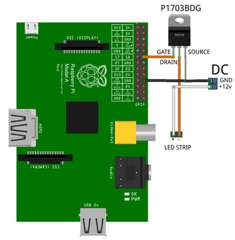
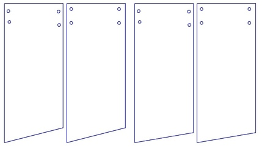

Ссылка на github: https://github.com/ROSgirlsGIT/athena
Идея проекта Афина 1.0:
Идея проекта в том, чтобы поместить механическое сердце в грудь статуи Афины. Сердце должно биться при любой активности в аккаунте Instagram.
Афина 2.0 -
Развитие уже существующего проекта Афина 1.0. Наша задача - усовершенствовать его, устранить неполадки, поместить механическое сердце в тело Афины и подготовить проект к участию в выставке в резиденции Art&Science.
С чего мы начинали?
Программная часть
Использовано: Python, ROS, Instpector(https://github.com/niuware/instpector) Присутствуют три программы: для получения данных о лайках, комментариях и подписках, для получения данных о использовании хэштега, для управления сервоприводом. Программа, управляющая сервоприводом, создает вращение по кругу в одном направлении.
Аппаратная часть
Использовано: Raspberry Pi 4, сервопривод постоянного вращения DS04-NFC Собрано сердце, управляемое сервоприводом через Raspberry Pi.
Краткое описание используемых программ
- instagram.py Программа для получения данных о лайках, комментариях и подписках в Инстаграм. Для получения данных используется Instpector(https://github.com/niuware/instpector).
- led.py Программа управления светодиодной лентой. Мигания ленты синхронизированы с биением сердца. Используется библиотека RPi.GPIO.
- servo.py Программа для управления сервоприводом. Используется библиотека RPi.GPIO.
- sound.py Программа для воспроизведения звука. Используется библиотека pyglet.
- tags.py Программа для получения данных об отметках в Инстаграм.
Исходный код всех программ можно посмотреть во вкладке "Файлы".
Процесс работы
В процессе работы мы:
- Изучили принцип работы с ROS
- Выявили причину задерки перед биением сердца
- Написали программу для плавной подсветки, работающей синхронно с биением сердца
2 #Два цикла for перебирают значения мощности подсветки, чтобы она плавно становилась ярче и затухала
3 for pow in range (1, 101, 1):
4 led.ChangeDutyCycle(pow)
6 for pow in range (100, 0, -1):
7 led.ChangeDutyCycle(pow)
- Модифицировали программу управления сервоприводом для получения более естественного сердцебиения
2 #Значения в ChangeDutyCycle() и rospy.sleep() подобраны таким образом, чтобы сердцебиение было максимально похоже на реальное
3 pwm.ChangeDutyCycle(7.5)
5 pwm.ChangeDutyCycle(12.5)
7 pwm.ChangeDutyCycle(2.5)
9 pwm.ChangeDutyCycle(7.5)
11 pwm.ChangeDutyCycle(0)
- Разобрались с принципом подключения новых компонентов к Raspberry Pi
- Подключили светодиодную ленту

- Написали программу для воспроизведения звука сердцебиения
1 #Передаём путь до необходимой нам мелодии, загруженной в Raspberry Pi
2 song = pyglet.media.load('/home/pi/sounds/serdce.mp3')
- Подключили колонки для воспроизведения звука
- Сделали "гирлянду" из светодиодной ленты для удобства её прикрепления к туловищу
- Разработали чертеж креплений сердца к туловищу

- Вырезали крепления с помощью лазерного резака
- Выпилили отверстия в ногах для вывода проводов
Подключении светодиодной ленты
Использовано:
- Светодиодная лента на 12V.
- Транзистор n-типа IRLZ34N, рассчитанный на нагрузку ленты и напряжение 12V.
- Сам Raspberry PI.
- Соединительные провода.
- Мощный блок питания на 12V.
Подключение колонок
Использовано:
- Колонки Flarx HB-S06. Преимущество данных колонок в том, что они лёгкие и их без проблем можно приклеить к телу на двустронний скотч.
- Jack 3.5. Подключение колонок к Raspberry Pi происходило напрямую.

 1.8.11
1.8.11